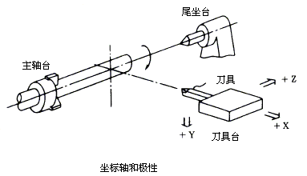
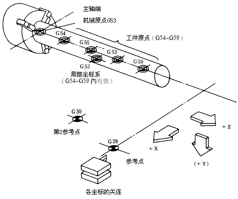
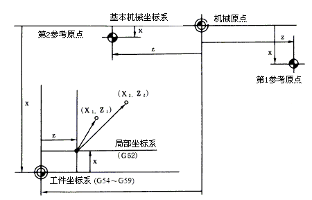

下图是车床轴的名称和方向。与主轴平行之轴叫做Z轴，刀具台离开主轴台之方向为正方向。与Z轴成90度直角之轴叫做X轴，离开Z轴为正方向。

对车床而言，是使用右手制定的系统坐标。上图的情况是，Y轴为垂直XZ平面，向下为正方向。在XZ平面上的圆弧为顺时针方向或反时针方向，是从Y轴的正方向（向上看）来判断。

基本机械坐标系、工件坐标系及局部坐标系
基本机械坐标系是机械固定坐标系，表示机械固定位置的坐标系。工件坐标系是作程式时，程式实际使用的坐标系是工件上参考准点做为坐标原点设定的坐标系。局部坐标系是工件坐标系上所使用的坐标系，有助于零件加工程式。基本机械坐标系及工件坐标系（G54~G59）
是在完成参考点复归后，依照参数自动一。这时候，基本机械坐标系是以第一参考点为准，用参数来设定基本机械坐标原点（机械原点）的位置。

局部坐标系（G52）在工件坐标系1~6 所指定的坐标系才有效。然而，基本机械坐标系（G53）用G92 指令来变更成假想机械坐标系以后，则所有工件坐标系1~6 也同时位移变更。
机械原点和第2参考点（原点）
机械原点为基本机械坐标系的基准点，是机械固有点，也由参考点（原点）复归决定。第2参考点（原点）是依基本机械坐标系，用参数来设定位置的坐标值。
